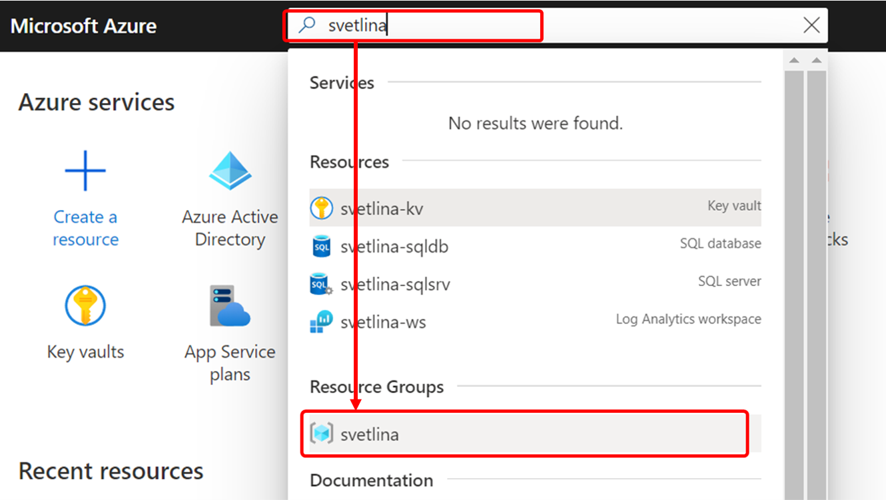
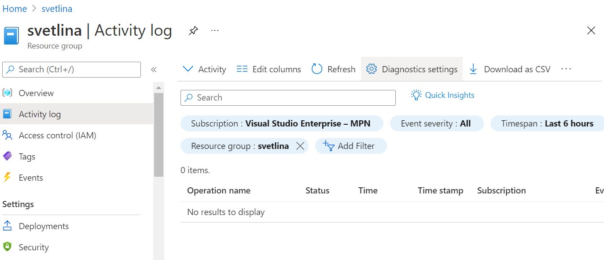
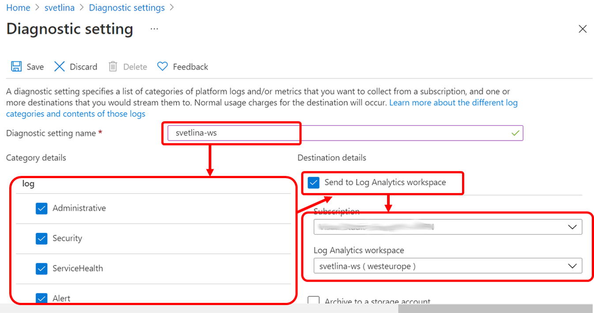
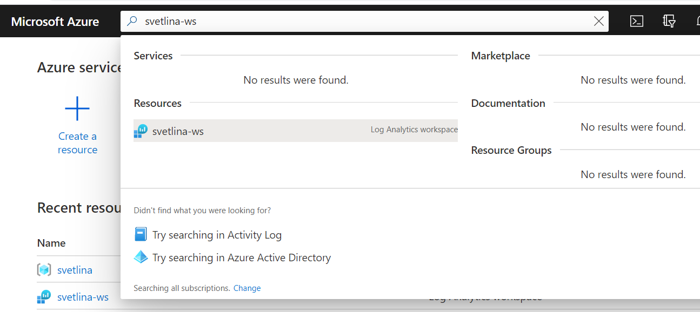
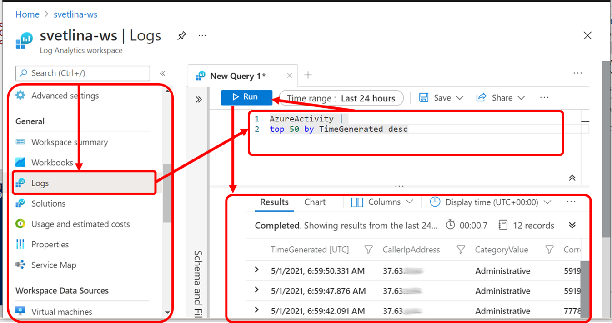

How to send Azure Activity Log to Log Analytics Workspace?
Connect Azure Activity Log to Log Analytics Workspace
-
Open the resource group diagnostic settings: From the Azure Portal search for the name of the resource group
svetlinaand select it from the Resource Groups results.  -
From the resource group menu select the Activity Log option and click the Diagnostics settings link 
-
Click the Add diagnostic setting link
-
Give a name to the new diagnostic setting (e.g.
svetlina_ws), select categories you want to be sent to the workspace, select the Send to Log Analytics workspace option and find the log analytics workspace you want to be used as target:  -
Click Save to save the diagnostic settings
Query Activity Log from Log Analytics Workspace
We started collecting Activity Log events into a Log Analytics Workspace. But how we can query the workspace?
-
From Azure Portal search for the workspace by name
svetlina-ws. Select the log analytics workspace from the resource results.  -
From the workspace resource menu find and select the Logs option. In the query area enter the following query and press the
Runbutton to execute the query. Explore the resultThe query returns the last 50 logged activities.AzureActivity | top 50 by TimeGenerated desc
